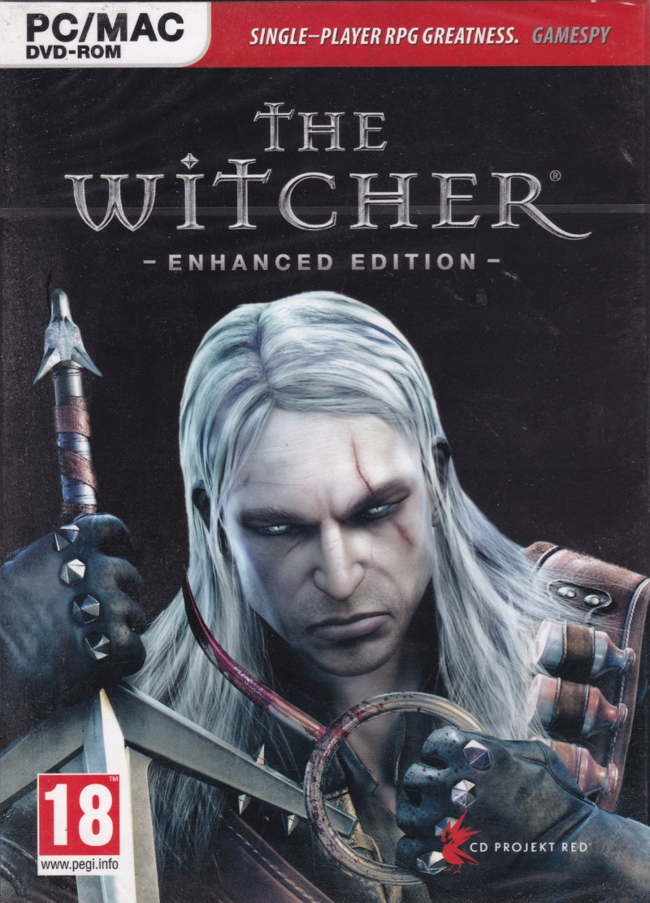
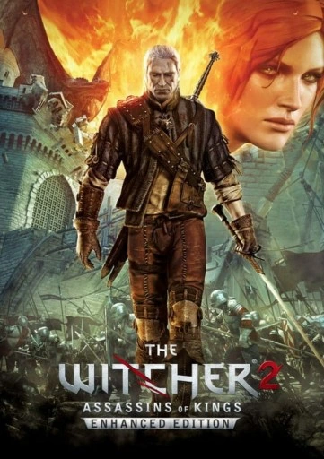
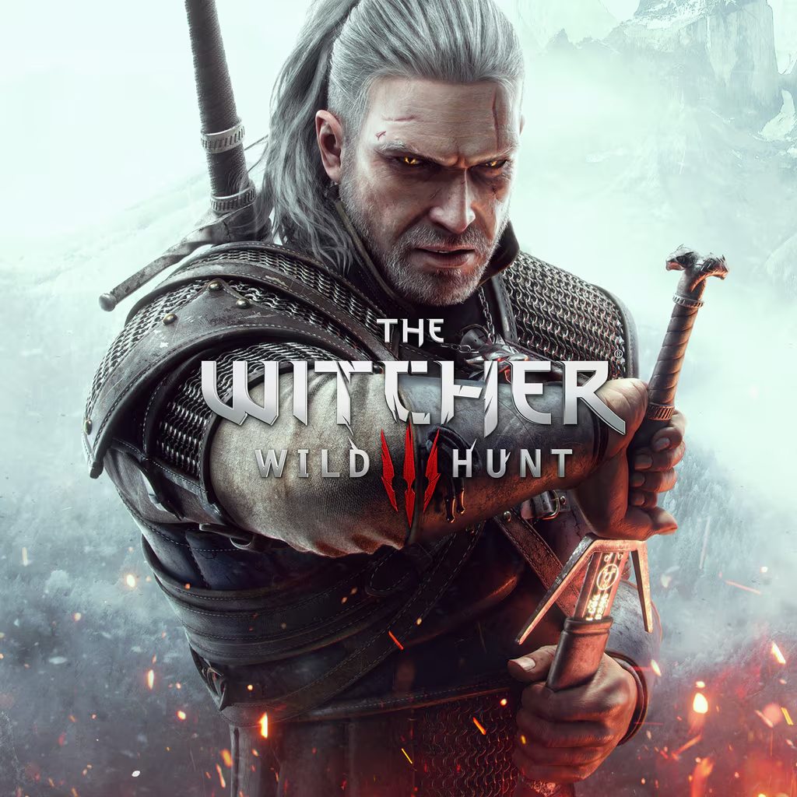

Zaklínač
Zaklínač je fantasy série od polského autora Andrzeje Sapkowského.
Hlavní postavou je Geralt z Rivie, mutant a lovec nestvůr.
Oblíbené postavy
- Geralt z Rivie
- Yennefer z Vengerbergu
- Ciri
- Triss Ranuncul
- Vesemir
Zaklínačské školy
-
Škola Vlka
- Nejznámější člen: Geralt
- Styl: vyvážený boj a magie
-
Škola Kočky
- Styl: rychlost a obratnost
- Pověst: nemilosrdní a neetičtí
-
Škola Medvěda
- Styl: těžké brnění a síla
-
Škola Hada
- Styl: jedy a rychlé útoky
-
Škola Gryfa
Videohry
| Název |
Rok vydání |
Vývojář |
Přebal |
| The Witcher |
2007 |
CD Projekt red |
 |
| The Witcher 2: Assasins od kings |
2011 |
 |
| The Witcher 3: Wild Hunt |
2015 |
 |